Using Powershell
Enumeration Through Powershell
PowerShell is the upgrade of Command Prompt. Microsoft first released it in 2006. While PowerShell has all the standard functionality Command Prompt provides, it also provides access to cmdlets (pronounced command-lets), which are .NET classes to perform specific functions. While we can write our own cmdlets, like the creators of PowerView did, we can already get very far using the built-in ones.
Note: Powerview has been moved into recon category of (https://github.com/PowerShellMafia/PowerSploit)
Since we installed the AD-RSAT tooling in Task 3, it automatically installed the associated cmdlets for us. There are 50+ cmdlets installed. We will be looking at some of these, but refer to this list for the complete list of cmdlets.
(https://docs.microsoft.com/en-us/powershell/module/activedirectory/?view=windowsserver2022-ps)
Using our SSH terminal, we can upgrade it to a PowerShell terminal using the following command: powershell
Important Note:
Unlike CMD's net command, Powershell commands that enumerate domain can be run from our own Windows VM (Not Connected to Domain).
However, as usual we need a valid user credential.
Login to our own Windows VM using local account & then use runas command to inject the credentials into memory & in the new cmd prompt launch powershell.
Also Note: The AD-RSAT tools have to be installed to facilitate the CMDLETs required into powershell
Users
We can use the Get-ADUser cmdlet to enumerate AD users:
Get-ADUser -Identity gordon.stevens -Server za.tryhackme.com -Properties *
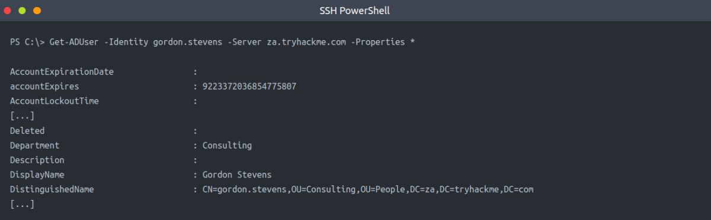
In Our Case:
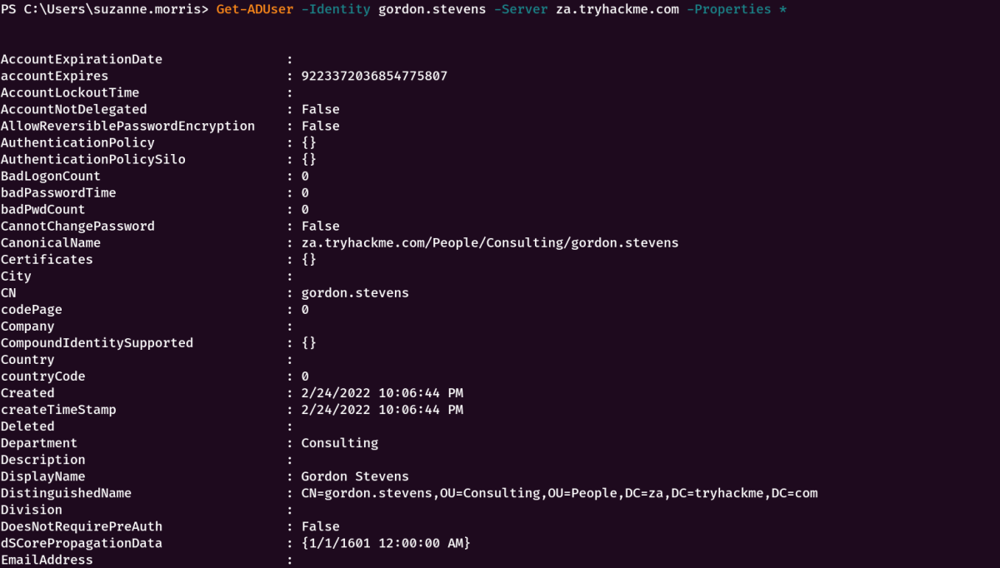
The parameters are used for the following:
• -Identity - The account name that we are enumerating
• -Properties - Which properties associated with the account will be shown, * will show all properties
• -Server - Since our own Windows VM is not domain-joined, we have to use this parameter to point it to our domain controller
[If we used THMJMP1 machine, we do not need the -Server option as the system is domain joined.]
For most of these cmdlets, we can also use the -Filter parameter that allows more control over enumeration and use the Format-Table cmdlet to display the results such as the following neatly:
Get-ADUser -Filter 'Name -like "*stevens"' -Server za.tryhackme.com | Format-Table Name,SamAccountName -A

In Our Case:
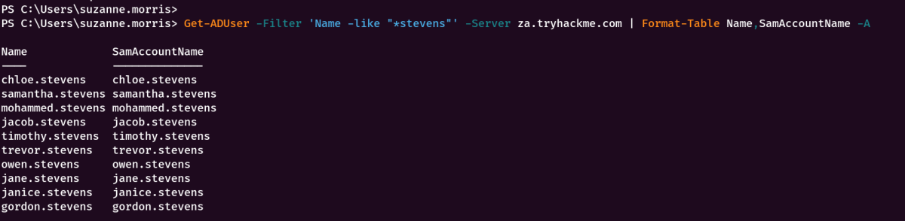
Groups
We can use the Get-ADGroup cmdlet to enumerate AD groups:
Get-ADGroup -Identity Administrators -Server za.tryhackme.com
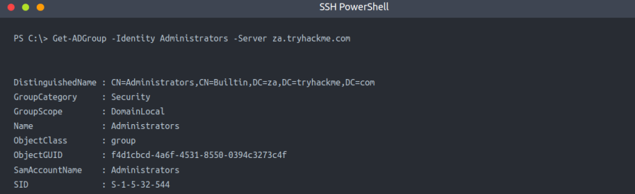
In Our Case:
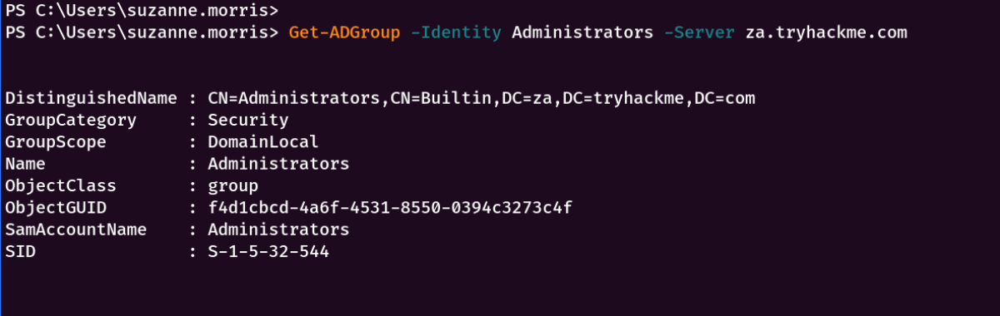
We can also enumerate group membership using the Get-ADGroupMember cmdlet:
Get-ADGroupMember -Identity Administrators -Server za.tryhackme.com
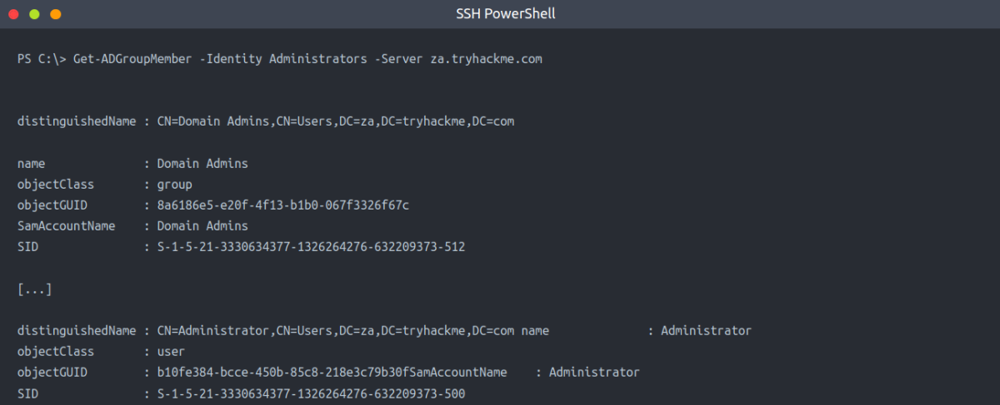
In Our Case:
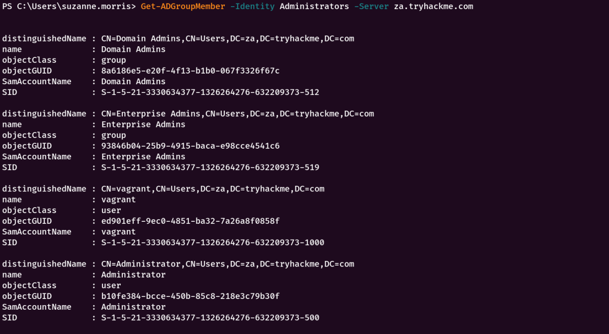
Note: To view all information about the group, use -Property *
AD Objects
1) A more generic search for any AD objects can be performed using the Get-ADObject cmdlet. For example, if we are looking for all AD objects that were changed after a specific date:
$ChangeDate = New-Object DateTime(2022, 02, 28, 12, 00, 00)
Get-ADObject -Filter 'whenChanged -gt $ChangeDate' -includeDeletedObjects -Server za.tryhackme.com
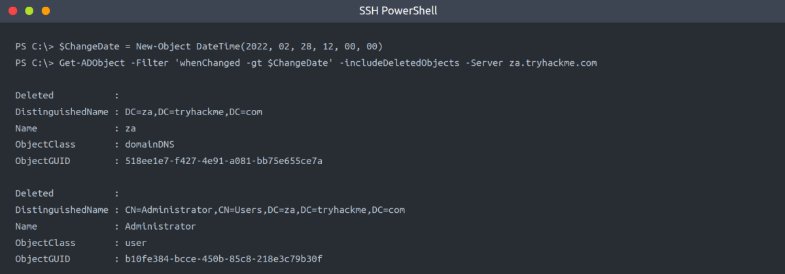
In Our Case:
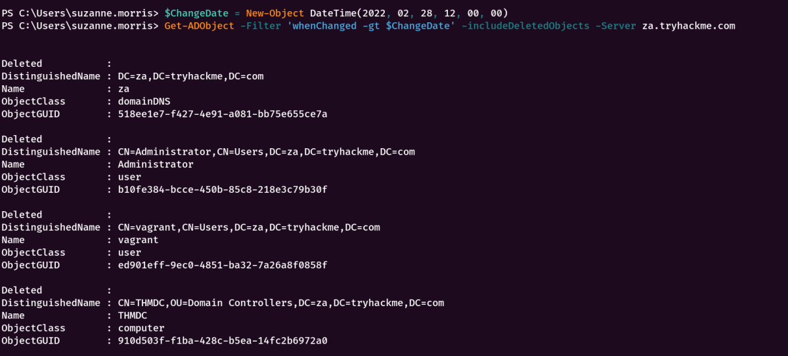
2) If we wanted to, for example, perform a password spraying attack without locking out accounts, we can use this to enumerate accounts that have a badPwdCount that is greater than 0, to avoid these accounts in our attack:
Get-ADObject -Filter 'badPwdCount -gt 0' -Server za.tryhackme.com
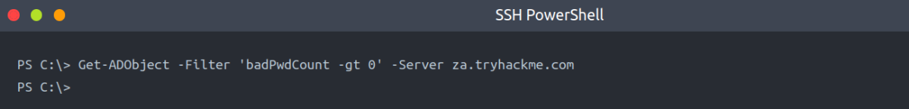
This will only show results if one of the users in the network mistyped their password a couple of times.
In Our Case:
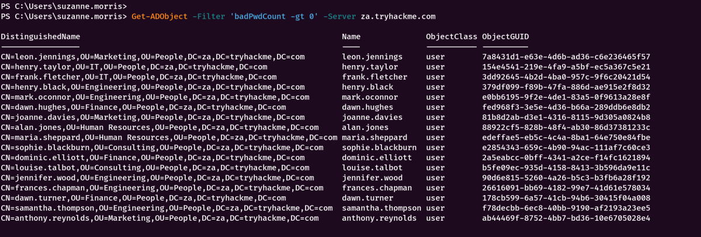
Domains
We can use Get-ADDomain to retrieve additional information about the specific domain:
Get-ADDomain -Server za.tryhackme.com
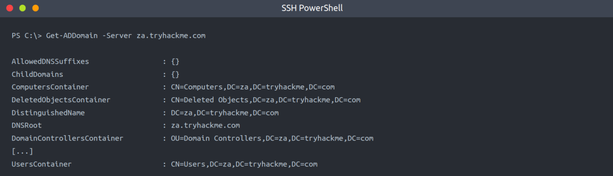
In Our Case:
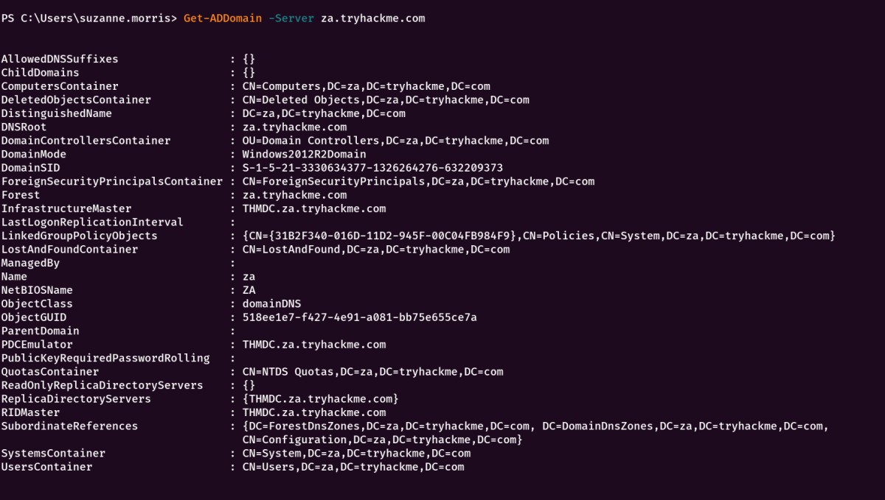
Altering AD Objects
The great thing about the AD-RSAT cmdlets is that some even allow you to create new or alter existing AD objects. However, our focus for this network is on enumeration. Creating new objects or altering existing ones would be considered AD exploitation, which is covered later in the AD module.
However, we will show an example of this by force changing the password of our AD user by using the Set-ADAccountPassword cmdlet:
Set-ADAccountPassword -Identity gordon.stevens -Server za.tryhackme.com -OldPassword (ConvertTo-SecureString -AsPlaintext "old" -force) -NewPassword (ConvertTo-SecureString -AsPlainText "new" -Force)
Replace: old -→ Old Password & new -→ New Password
In Our Case:
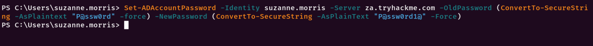
Benefits
▪ The PowerShell cmdlets can enumerate significantly more information than the net commands from Command Prompt.
▪ We can specify the server and domain to execute these commands using runas from a non-domain-joined machine.
▪ We can create our own cmdlets to enumerate specific information.
▪ We can use the AD-RSAT cmdlets to directly change AD objects, such as resetting passwords or adding a user to a specific group.
Drawbacks
▪ PowerShell is often monitored more by the blue teams than Command Prompt.
▪ We have to install the AD-RSAT tooling or use other, potentially detectable, scripts for PowerShell enumeration.